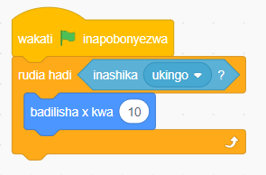
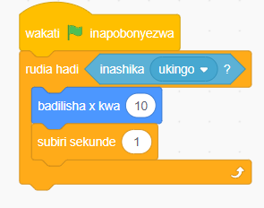

Kazi ya kufanya namba 6
Unda programu itakayosogeza kihusika kwa hatua kumi kwenye muhimili wa X hadi kiguse ukingo wa jukwaa.
Hatua
1. Bofya bloku la Matukio kisha chagua bloku ya wakati bendera ya kijani inapobonyezwa.
2. Bofya bloku la Kidhibiti kisha chagua rudia hadi ( ).
3. Ongeza sharti litakalotimizwa ndani ya mabano ya bloku la rudia hadi ( ). Katika hatua hii, chagua inashika ukingo ? kutoka kwenye bloku la Hisi.
4. Ongeza msimbo wa kusogeza kihusika hatua 10 kwenye muhimili wa X sehemu ya ndani ya kitanzi cha rudia hadi ( ). Ili kufanya hivyo, chagua badilisha X kwa (10) kutoka kwenye bloku la “Mwendo”.
5. Bofya bendera ya kijani kuanzisha programu. Utaona kuwa kihusika kitabadilisha nafasi yake kwenye muhimili wa X kwa (10) kwa kujirudia hadi kitakapogusa ukingo wa jukwaa. Angalia au sikiliza maelezo ya Kielelezo namba 8 (a).
6. Ongeza bloku la subiri sekunde (1) kuona kinavyobadili nafasi X kwa (10) katika muhimili wa X. Angalia au sikiliza maelezo ya Kielelezo namba 8 (b).
Bloku za msimbo


Kielelezo namba 8: Kitanzi cha rudia hadi ( ) katika programu
Kumbuka: Bloku ya rudia hadi ( ) ni muhimu katika hali ambapo hujui ni mara ngapi unahitaji kurudia mchakato, lakini unajua sharti litakalofanya mzunguko kumalizika.